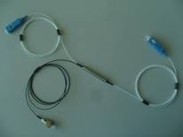

FWDM（1310/1490/1550nm filter WDM)

Wavelength(nm) |
T1550 R1310/1490 |
Max Insertion Loss(dB) |
Reflection Side<0.6 |
Transmission Side<1.0 |
|
Insert change value(dB) |
<0.3 |
Min Isolation |
Reflection Side>18 |
Transmission Side>30 |
|
PDL(dB) |
<0.15 |
Directivity(dB) |
>60 |
Return Loss(dB) |
>50 |
Operation Temperature(℃) |
0 ~ +65 |
Storage Temperature(℃) |
-40 ~ +80 |
Package Dimension(mm) |
5.5x35 |
Wavelength |
Fiber Type |
Fiber Length(meter) |
Connector Type |
1310/1490&1550nm |
250um 900um |
Standard 1m |
SC/PC/APC |